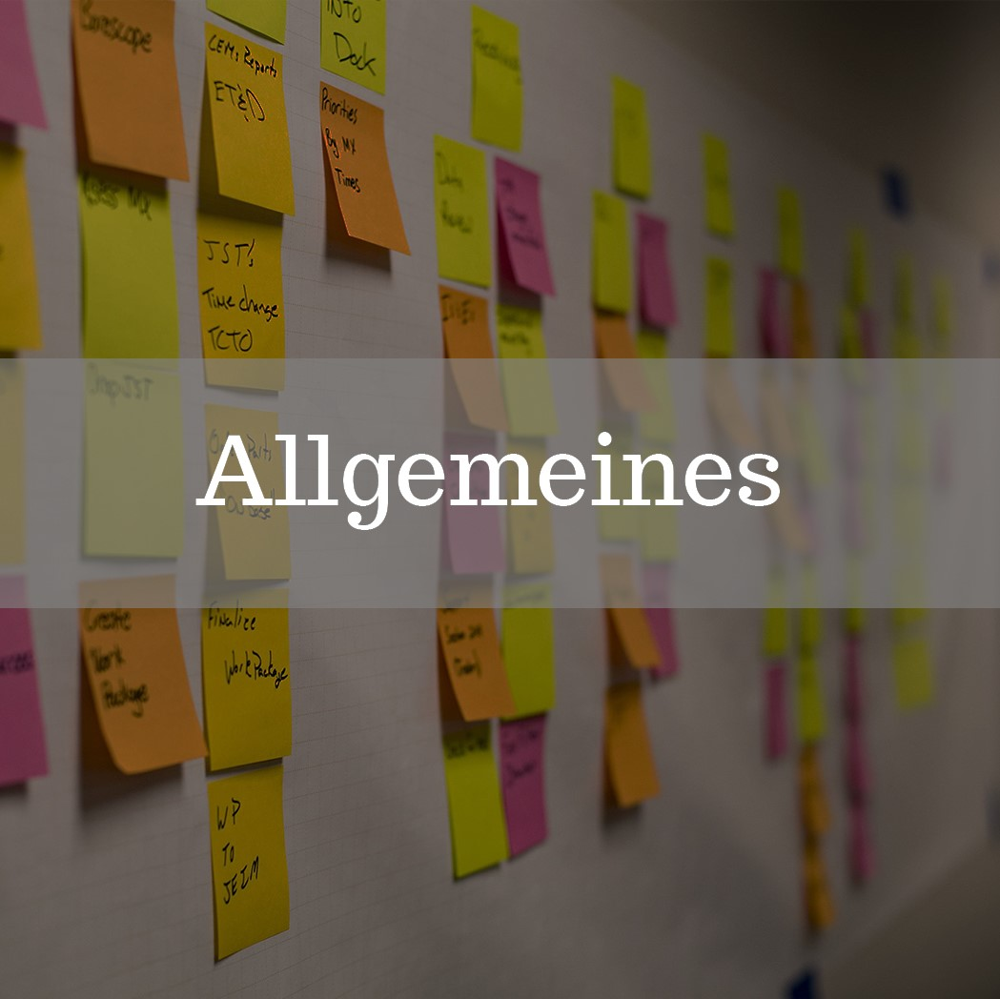

Dich erwarten..
..auf dieser Website viele Methoden, die du als Scrum Master anwenden kannst. Unser Team arbeitet mit Hochdruck am Aufbau dieser Website und es wird eine immer wachsende Sammlung an Methoden sein.
Wenn du Methoden hast, die hier noch fehlen kannst du mit uns ganz einfach Kontakt aufnehmen. Schreibe eine Mail an mail@scrumtoolbox.de und wir werden sie, wenn gewünscht, unter deinem Namen veröffentlichen.
Mehr erfahrenHier findest du ...
...verschiedene Methoden, die du als Scrum Master einsetzten kannst.

Unter diesem Punkt findest du z. B. Methoden für Moderationstechniken, Gamification und Konfliktmanagement.
Mehr erfahren